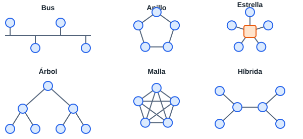

Desarrollado a partir de la programación. Se ampliará con lo que añada el profesor.
| Tipo | Alcance | Ejemplo |
|---|---|---|
| PAN | Personal | Móvil y auriculares Bluetooth |
| LAN | Edificio | La red del aula |
| MAN | Ciudad | Red de un ayuntamiento |
| WAN | País o mundo | Internet |
Por propiedad, una red es privada o pública. Por relación entre equipos, cliente-servidor o de igual a igual (P2P).
| Componente | Función | Capa OSI |
|---|---|---|
| Tarjeta de red (NIC) | Conecta el equipo. Tiene una dirección MAC | 1-2 |
| Conmutador (switch) | Une equipos de una LAN usando la MAC | 2 |
| Router | Une redes distintas usando la IP | 3 |
| Punto de acceso | Da conexión wifi a una red cableada | 2 |
| Cortafuegos | Filtra el tráfico según reglas | 3-7 |
| Módem / ONT | Conecta con el proveedor | 1 |

El mapa físico muestra dónde está cada equipo y cada cable. El mapa lógico muestra redes, direcciones IP y routers.
| Categoría | Velocidad típica | Distancia |
|---|---|---|
| Cat 5e | 1 Gb/s | 100 m |
| Cat 6 | 1 Gb/s (10 Gb/s hasta unos 55 m) | 100 m |
| Cat 6a | 10 Gb/s | 100 m |
| Fibra multimodo | 10 Gb/s o más | Cientos de metros |
| Fibra monomodo | 10 Gb/s o más | Kilómetros |
El conector de cobre es el RJ-45. La norma T568B ordena los hilos así: blanco-naranja, naranja, blanco-verde, azul, blanco-azul, verde, blanco-marrón, marrón.
La tecnología de las LAN cableadas es Ethernet. Una dirección MAC tiene 48 bits, por ejemplo 08:00:27:AB:CD:EF.
| OSI | TCP/IP | Ejemplos |
|---|---|---|
| 7 Aplicación, 6 Presentación, 5 Sesión | Aplicación | HTTP, DNS, SSH |
| 4 Transporte | Transporte | TCP, UDP |
| 3 Red | Internet | IP, ICMP |
| 2 Enlace, 1 Física | Acceso a la red | Ethernet, wifi |
Son 32 bits en 4 números: 192.168.1.10/24. La máscara dice qué parte es red.
| Rangos privados | Máscara |
|---|---|
| 10.0.0.0 – 10.255.255.255 | /8 |
| 172.16.0.0 – 172.31.255.255 | /12 |
| 192.168.0.0 – 192.168.255.255 | /16 |
2001:db8::1.| Estándar | Nombre | Bandas |
|---|---|---|
| 802.11n | Wi-Fi 4 | 2,4 y 5 GHz |
| 802.11ac | Wi-Fi 5 | 5 GHz |
| 802.11ax | Wi-Fi 6 / 6E | 2,4, 5 (y 6) GHz |
| 802.11be | Wi-Fi 7 | 2,4, 5 y 6 GHz |
NAT permite que muchos equipos privados salgan a Internet con una sola IP pública.